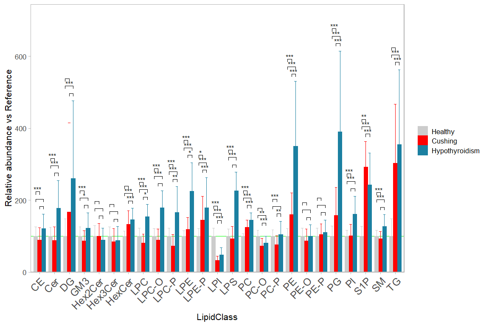
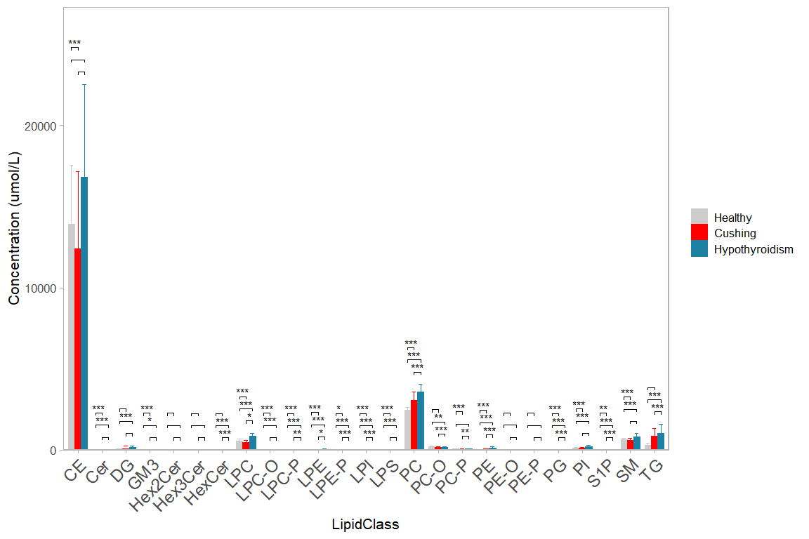

7 Bar chart with contrasts
Bar charts showing total composition per lipid class and statistical comparisons between groups are still often seen in the literature.
7.1 Libraries
library(here)
library(tidyverse)7.2 Data format
The example below requires a tidy (‘long-format’) table. Following columns are will be used: SubjectID, Group, LipidClass and Conc. See chapters xxx on how to prepare data in this format. For this example a raw test dataset will be imported and converted into the tidy format. The the sum composition per lipid classes is calculated and then provided to ggsignif::geom_signif.
d_long <- read_csv(here("data/Metabolites-1614644-supplementary.csv")) |>
pivot_longer(cols = -SubjectID:-Group, names_to = "Lipid", values_to = "Conc")
d_annot <- d_long |>
mutate(Lipid = str_replace(Lipid, " O-", "-O "),
Lipid = str_replace(Lipid, " P-", "-P ")) |>
separate(col = Lipid, into = c("LipidClass", "chain"), sep = " ", remove = FALSE) #> Warning: Expected 2 pieces. Additional pieces discarded in 376 rows [131, 132,
#> 183, 184, 419, 420, 471, 472, 707, 708, 759, 760, 995, 996, 1047, 1048, 1283,
#> 1284, 1335, 1336, ...].d_sum <- d_annot |>
group_by(SubjectID, Group, LipidClass) |>
summarise(Conc = sum(Conc)) |>
ungroup()| SubjectID | Group | LipidClass | Conc |
|---|---|---|---|
| CS_01 | Cushing | CE | 12000.82 |
| CS_01 | Cushing | Cer | 7.46 |
| CS_01 | Cushing | DG | 76.85 |
| CS_01 | Cushing | GM3 | 5.89 |
| CS_01 | Cushing | Hex2Cer | 5.59 |
7.3 Bar chart with contrasts
The display of significance brackets of statistical comparisons without groups of a grouped bar chart needs a work- around when using the ggsignf package. In this case the significance levels and precise x and y coordinates have to be manually calculated and provided to ggsignif::geom_signif.
In this example below we use lipid class concentration normalized to the reference group.
# OPTIONAL: Subset you dataset
d_plot <- d_sum # %>% filter(LipidClass %in% c("CE","TG","PC", "DG", "PE"))
# OPTIONAL: Normalize your data (by e.g. the reference group)
d_plot <- d_plot |>
group_by(LipidClass) |>
mutate(Conc = Conc/mean(Conc[Group == "Healthy"]/100))
# OPTIONAL: order your groups as you wish (otherwise it will be alphabetical)
d_plot$Group <- factor(d_plot$Group,
levels = c("Healthy", "Cushing", "Hypothyroidism"))
# OPTIONAL: define specific color for each group,
my_colors <- c(Healthy = "grey80", Cushing = "red", Hypothyroidism = "#1b80a1")
# NOTE: define your contrasts here, or select all combinations
#contrasts <- list(c("Cushing", "Healthy"), c("Healthy","Hypothyroidism"))
contrasts <- combn(levels(d_plot$Group), 2, FUN = list) # All comb.
# ---- Get p-values and brackets coordinates -----
group_levels <- levels(d_plot$Group)
n_groups <- length(group_levels)
get_pval <- function(d, contrasts) {
map_dfr(.x = contrasts,
.f = ~ broom::tidy(
t.test(formula = Conc ~ factor(Group),data = subset(d, Group %in% .x))) |>
mutate(id = paste0(.x, collapse = "-"),
grp1 = .x[1],
grp2 = .x[2],
y_max_1 = mean(d$Conc[d$Group == .x[1]])+sd(d$Conc[d$Group == .x[1]]),
y_max_2 = mean(d$Conc[d$Group == .x[2]])+sd(d$Conc[d$Group == .x[2]]),
y_max = max(y_max_1, y_max_2)))
}
d_stat <- d_plot |>
group_by(LipidClass) |>
nest() |>
mutate(res = map(.x = data, .f = \(x) res = get_pval(x, contrasts))) |>
unnest(-data) |>
mutate(
p_val_sym = case_when(
p.value > 0.05 ~ "", p.value > 0.01 ~ "*",
p.value > 0.001 ~ "**", TRUE ~ "***"))|>
mutate(y_max = max(y_max)) |>
ungroup() |>
mutate(y_max_all = max(y_max)) |>
group_by(LipidClass) |>
mutate(
x_min = cur_group_id() - 0.8/n_groups * (match(grp1, group_levels)-2),
x_max = cur_group_id() - 0.8/n_groups * (match(grp2, group_levels)-2),
y_max = y_max + (y_max_all/30 * row_number() )
)
# ---- END of Get p-values and brackets coordinates -----
# The plotting function
plt <- ggplot(d_plot, aes(x = LipidClass, y = Conc, fill = Group, color = Group)) +
geom_hline(yintercept = 100, color = "green", size=0.1) +
geom_bar(stat = "summary", fun.data = "mean_sdl",
position = 'dodge', width = 0.8, size = 0) +
geom_errorbar(stat = "summary", fun.data = "mean_sdl", fun.args = list(mult = 1),
width = 0.5, position = position_dodge(width=0.8), size = 0.1) +
scale_y_continuous(limits = c(0,NA), expand = expansion(mult = c(0, .10)))+
scale_color_manual(values = my_colors) +
scale_fill_manual(values = my_colors) +
ggsignif::geom_signif(
y_position = d_stat$y_max,
xmin = d_stat$x_min,
xmax = d_stat$x_max,
annotation = d_stat$p_val_sym,
margin_top = 0.05, step_increase = 1.1, vjust = 0.5, size = 0.2,
tip_length = 0.005, textsize = 2, color = "black") +
theme_light(base_size = 8) +
theme(
axis.text.x = element_text( size=9, angle = 45,vjust = 1, hjust = 1),
panel.grid = element_blank(),
legend.key.size = unit(3,units = "mm"),
#legend.position=c(0.93, .87),
legend.title=element_blank()) +
ylab("Relative abundance vs Reference")
plt
#ggsave(plot = plt, filename = "barchart.png",
# width = 183, height = 90,units = "mm", dpi = 300)
Compare this to plotting non-normalized concentrations
